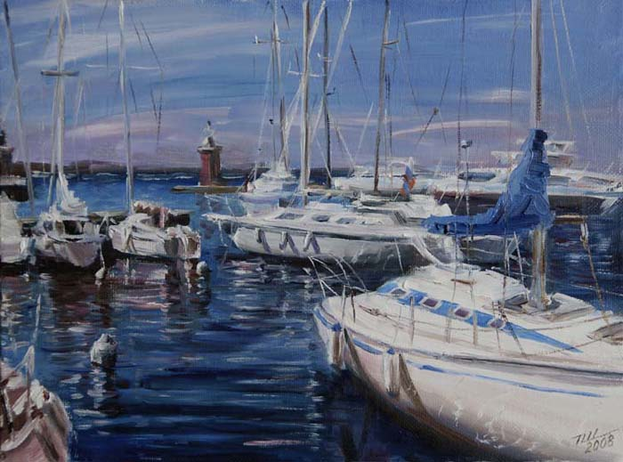
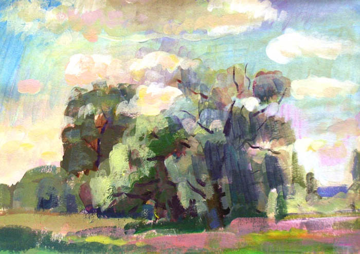
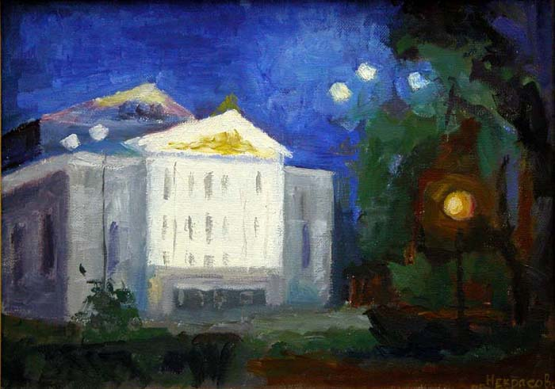
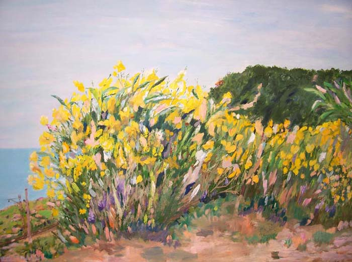

Студия изобразительного искусства для взрослых и детей!
Программа обучения предусматривает индивидуальный подход в зависимости от уровня подготовки и пожеланий учеников.
Основу обучения составляет академический рисунок:
Основы линейной перспективы
Основы пластической анатомии
Рисунок гипсовой головы
Живая модель
Занятия по живописи предусматривают:
Изучение свойств цвета
Освоение понятий:
Гаммы
Колорита
Воздушной перспективы
Освоение метода цвето-тональных отношений
Подготовка к поступлению в учебные заведения художественного профиля
Цель программы – подготовить участника студии к самостоятельной творческой деятельности, а также расширить и углубить представления учеников в сфере искусства, познакомить студийцев с различными направлениями изобразительного творчества.
Лучше поздно, чем никогда!
Возрастной диапазон студийцев – от 14 до 60 и старше. Студию посещают школьники, студенты, люди разных профессий, пенсионеры.
Студия Френкеля» - ежегодный участник Международной выставки-продажи живописи, графики, скульптуры и изделий декоративно-прикладного искусства «АРТ-ПЕРМЬ» (с1999 г.) (Выставочный центр «Пермская ярмарка»). На выставке Арт-Пермь 2012 г. студию представляли 18 авторов. В разные годы работы студийцев экспонировались в Политехническом университете, в библиотеке им. А.С.Пушкина, на Пермской ГРЭС, на других площадках.
Работы студийцев

"Яхты"

"Ветлы в солнечный день"

"Ночь в парке"

"Весна на взморье"